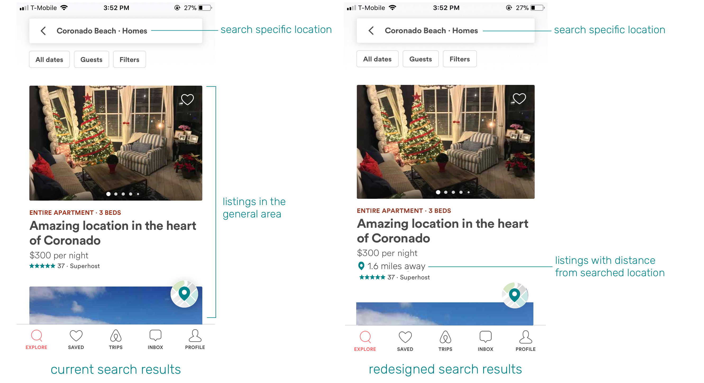
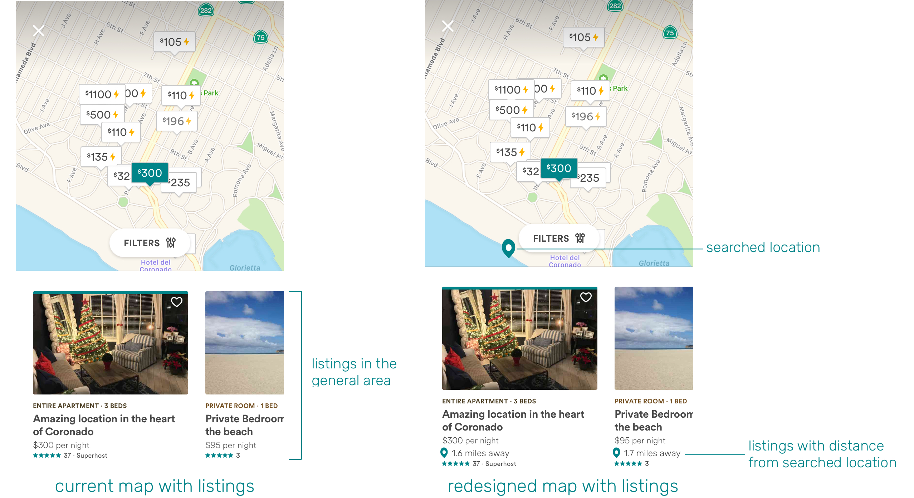
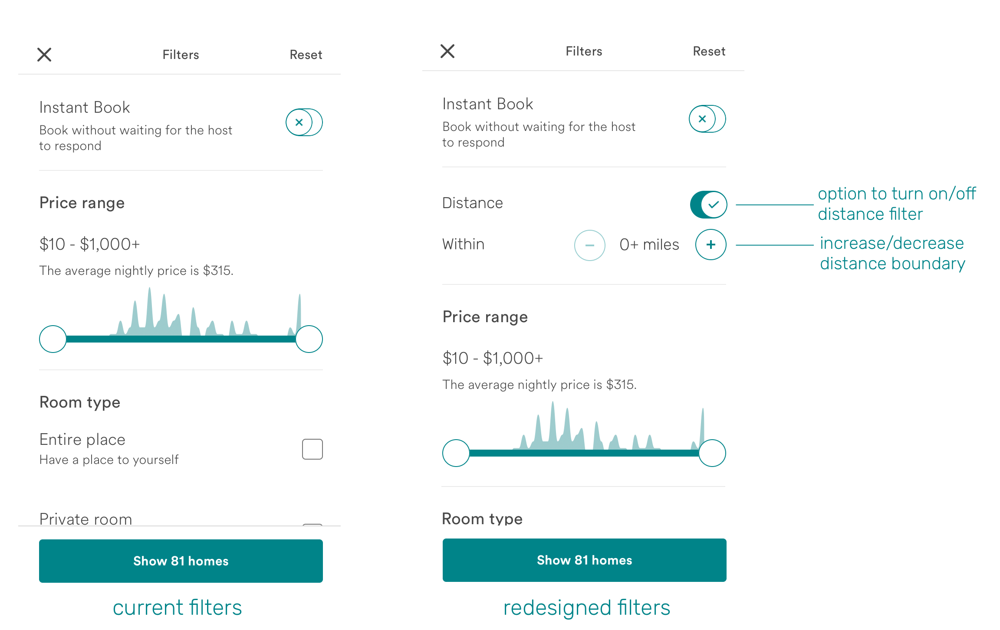
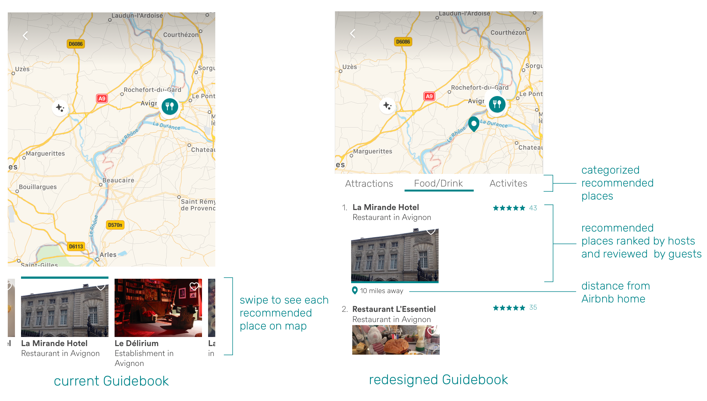
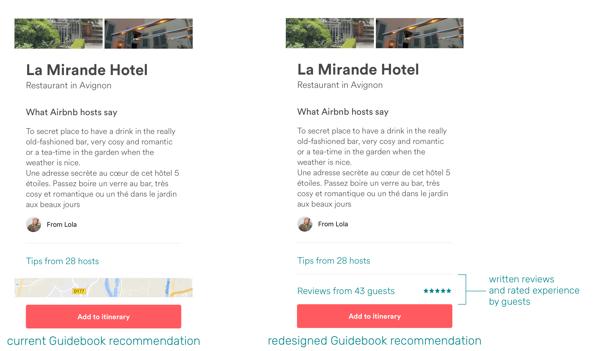

The Objective
The main purpose of the redesign project was to better understand current user goals and experience with the Airbnb service and to use that information to generate possible design improvements.
During the design process, I wanted to make sure that...
• design decisions reflect the company’s values and vision
• proposed design solutions help users accomplish their immediate goals and allow for pleasant and strategic travel
Design Process
1. Research company values
2. Generate questions to address
3. User Research
4. Analyzze current user experience
5. Ideate design solutions
6. Redesign user flow and features
Airbnb's Mission:
“You see, a house is just a space, but a home is where you belong. And what makes this global community so special is that for the very first time, you can belong anywhere.”
Airbnb strives to be more than a platform where people find a place to stay when traveling. Airbnb’s vision is to create a world where people can...
1. Feel like a local wherever they go, in places all over the world.
2. Connect people from different backgrounds and cultures.
Questions to Address:
What are the major considerations when booking a stay through Airbnb?
Are there any missing features that can directly address those considerations?
What makes a stay particularly memorable and how can positive experiences be embedded in the design and made possible through the product?
How can Airbnb be enhanced so it is not only a platform to find a place to stay, but to seek full and meaningful travel experiences and to establish connections between hosts and guests?
User Research
Using the questions as a guide, I conducted three interviews with Airbnb users who have traveled as guests. I asked them to verbally talk through the steps they take when booking an Airbnb home to any destination they desired and to reflect on past traveling experiences using Airbnb. Each interview took about 15 minutes.
User 1: Female (age 22), uses Airbnb domestically and abroad mainly for leisurely travel
User 2: Male (age 25), uses Airbnb domestically mainly for objective/goal-oriented travel (business trips, conferences, event and activity oriented trips)
User 3: Female (age 45), uses Airbnb domestically and abroad for leisurely travel with family as well as objective travel
User Insights
Based on the user research, I’ve uncovered the following insights:
1. When traveling to a particular destination, users take into account the location of the Airbnb homes in proximity to places they like to see, visit, and explore (such as major areas/places of attraction).
User 1: Booking a trip to San Diego
Conducts extensive research areas in San Diego and narrows down choices to a specific area– Coronado Island.
Strongly prefers a place close to Coronado beach.
User 2: Booking a trip to Mammoth Ski Resort
Prioritizes Airbnb homes nearest to the resort for the convenience of traveling between the two locations.
User 3: Booking a trip to Seattle
Searches for an Airbnb that is walking distance to Pike’s Place Market
2. Users have better experiences when they are able to “live like a local” in an unfamiliar place, which is made possible through direct recommendations from natives and other travelers.
Delightful travel experiences result not only from the physical qualities of an Airbnb home, but interactions with hosts and other natives and more specifically, receiving personal recommendations and tips from the people who know the area best (where to visit and where to eat). This translates to an authentic travel experience.
“I like to ask the host to recommend good places to eat and visit in the area, because they give valuable information that may be harder to find online.”
“It’s useful when Airbnb listings have Guidebooks because it’s an additional resource worth looking into.”
“When I traveled to Korea, I stayed at a hostel-like Airbnb home. Korea doesn’t have Yelp and I knew little about where to go and where to eat nearby, but the host and the other travelers who had been there longer shared their favorite local places. I was able to experience the neighborhood in a new way.”
The Current Design:
1. While the current application provides options and filters related to availability, price, number of guests, room type, and more, it does not give specific information regarding a home’s distance to places of interest.
• When an address or specific place is searched, the app lists homes in the general area but does not give further details of its proximity
• No option of filtering homes based on desired distance boundaries
2. While Airbnb wants guests to experience the life of a local while traveling through the resources of hosts, these user goals are often limited to offline experiences (when hosts and guests meet in person). Some Airbnb listings do include an accessible resource called Guidebook that allows hosts to share recommendations and tips which guests can add to their itinerary. However...
• Guidebooks do not have a clear organization of information that allows guests to efficiently search through options
• Guests have to swipe through all travel recommendations to find specific recommendations (they want restaurant recommendations, but have to swipe through the whole list of recommendations)
• The ordering of recommended places is unclear (what gets listed first and what gets listed last?)
• Guidebooks have "tips from hosts" but guests cannot rate and share their experiences at these recommended places– one way system (no feedback, no community, which undermines Airbnb's vision of connecting people/creating a community of guests and hosts)
Possible Design Solutions
1. Include distance information and a distance boundary filter
Users can have the option of choosing an Airbnb home nearby places they wish to be in close proximity to. When users search up an address or specific location, listings would show the approximate distance.
This will allow users to consider the home's distance to a place of interest, as opposed to choosing from homes in the general area and checking distance on separate map applications only after they book a place.


Pinning the searched location on the map relative to the location of home listings will also be useful in giving users a better sense of its proximity, which is an important consideration when choosing an Airbnb home.
With the distance boundary filter, guests can set restrictions on homes that are outside the proximity they want to stay in. This feature would not only be useful for leisurely travels, but objective travels such as business trips and event-oriented trips (if a user is booking an Airbnb for a concert festival or conference, they can choose from homes that are within a certain distance to specific locations. Say, no further than 20 miles).
Allowing users to set distance boundaries will give them more options and confidence in their decision when choosing a place to stay. They will be able to strategically plan out their transportation to and from the Airbnb home to a destination as well.

2. Reorganize the Guidebook to be intuitive and inclusive
Categorizing recommended places would allow users to more quickly and efficiently find recommendations they are searching for, whether it be a place to dine, sightsee, or do activities.
Ranking places starting from the most highly recommended would allow users to prioritize places with the best possible experiences.
Including reviews from other guests who have visited the recommended places will provide valuable information and build a community of contributors as both hosts and guests can share their tips and experiences.

I created three main categories based on users' input on what recommendations they want from hosts: places to see, places to eat/drink, and places to do activities. Users can swipe left/right to go from one category to another and scroll down to see recommended spots ranked by hosts and view rated reviews by other guests. They can also see the Airbnb home in distance to the recommended places to plan their itinerary effectively.

Empowering both hosts and guests to give their personal input through Guidebooks will help create a sense of community and feedback online as well as highlight memorable travel experiences made possible through the app. Delightful experiences are created by the exchange of ideas and thoughts.
An example scenario would be:
Host: I highly recommend this place because this restaurant has been around 80 years and has a great history in this city. You will love the architecture and the atmosphere. Definitely try the shrimp pasta, a special in their hidden menu.
Guest: I'm so glad I got to visit this place! The shrimp pasta was delicious. There were not a lot of tourists as most people dining were locals. One tip: make sure you know how to order in French before you go.
Reflection:
I've gained a lot of insight throughout the redesign process: from researching, empathizing and interviewing, analyzing, and executing. Here's what I learned:
1. Design should be reflective of company values.
A product exists to meet the immediate needs of users (Airbnb users: finding a place to stay while traveling). However, it is equally important that the core mission of a company is reflected in the design (Airbnb: creating a world where people can belong anywhere and travel like a local). Because these values make up the identity of the company, it is essential that product features and facets serve and accomplish those purposes. I wanted to redesign Airbnb in a way that enables users to make better use of Guidebook and allow both guests and hosts to actively contribute to the travel resource.
2. Be actively aware of subtle user behaviors.
In the beginning of the user research I thought that users would directly pinpoint specific issues they faced with the current application. However, I realized that this search for obvious design flaws was a wrong approach because I was thinking of design before thinking of users. When I switched to a user-focused mentality, I was able to take note of subtle tendencies, unmet needs, and desires that were not blatantly stated in the interviews (in this case, that users search for Airbnb homes in proximity to other places and highly value the recommendations of hosts). I understood the power of listening and careful observation, which allowed me to question whether their not-so-obvious behaviors were considered in the current design and whether features can be added or improved with them in mind.
3. Help users make decisions with necessary information and details.
All information available in a product should not dictate the users' choices, but help them weigh different factors and make a decision based on their personal preferences. This gives power to the users. For this project, I observed what users considered when booking a stay and designed the interface to include information that they looked for (proximity of an Airbnb home from a searched location). I wanted to give users the option of using the distance boundary filter so that it is readily available when needed. For the Guidebook, I displayed the information in a way that will help users prioritize certain places and plan their itinerary (ranking and reviews, location of recommended places from the Airbnb home). The way in which information is organized on an interface has a great impact on the decisions users make and the ease and confidence in which they can make those decisions.